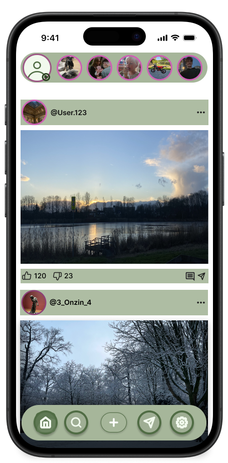
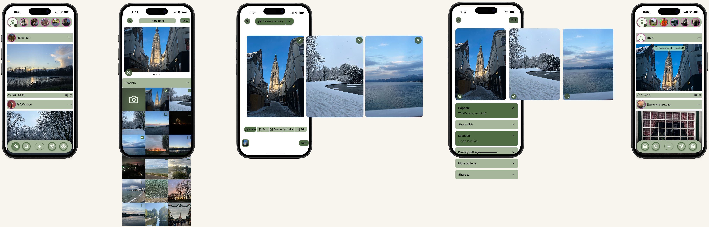

Social Media App – Instaflow
Voor UXD ontwierp ik Instaflow, een mobiele socialmedia-app. De opdracht draaide om het ontwerpen van één duidelijke gebruikersflow: het plaatsen van een post. Ik ontwierp alle stappen van het kiezen en bewerken van foto's tot het instellen en uiteindelijk plaatsen van de post.

Het concept
Instaflow is gebaseerd op de herkenbare werking van bestaande socialmedia-apps. Ik wilde dat gebruikers zonder veel uitleg begrijpen hoe de app werkt. Daarom gebruikte ik bekende elementen zoals stories, een feed, interactie-iconen en navigatie onderaan het scherm.

Mijn ontwerpkeuzes
Tijdens het ontwerpen hield ik rekening met verschillende UX-principes. Geselecteerde foto's worden bijvoorbeeld aangegeven met checkmarks, belangrijke afbeeldingen staan groot in beeld en knoppen en kleuren blijven tijdens de hele flow consistent. Zo kan de gebruiker steeds zien waar die zich bevindt en wat de volgende stap is.
Van stap naar complete flow
Ik werkte de volledige flow stap voor stap uit: van het selecteren van foto's tot het aanpassen van de post en kiezen van de instellingen. Bij iedere stap keek ik hoe ik de gebruiker genoeg vrijheid kon geven, zonder de interface onnodig ingewikkeld te maken.
Feedback & duidelijkheid
Na het plaatsen krijgt de gebruiker direct een melding dat de post succesvol is geplaatst. De nieuwe post verschijnt vervolgens in dezelfde herkenbare feed. Zo is meteen duidelijk dat de actie gelukt is.